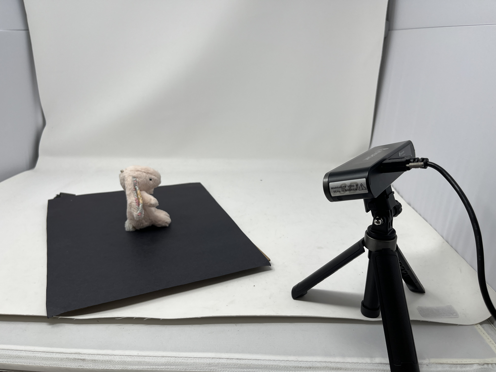
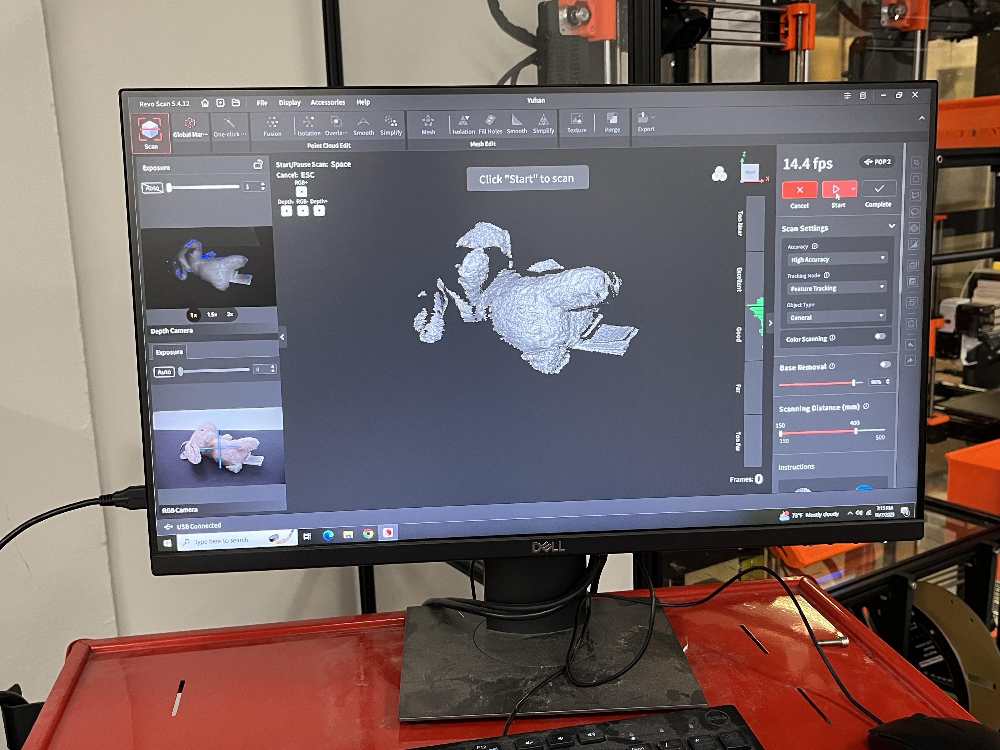
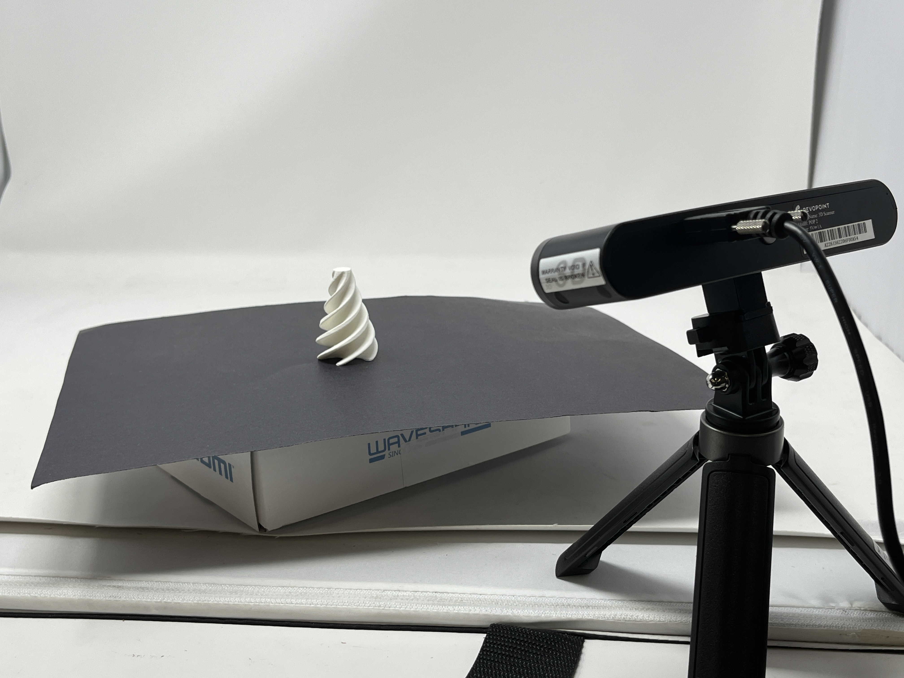
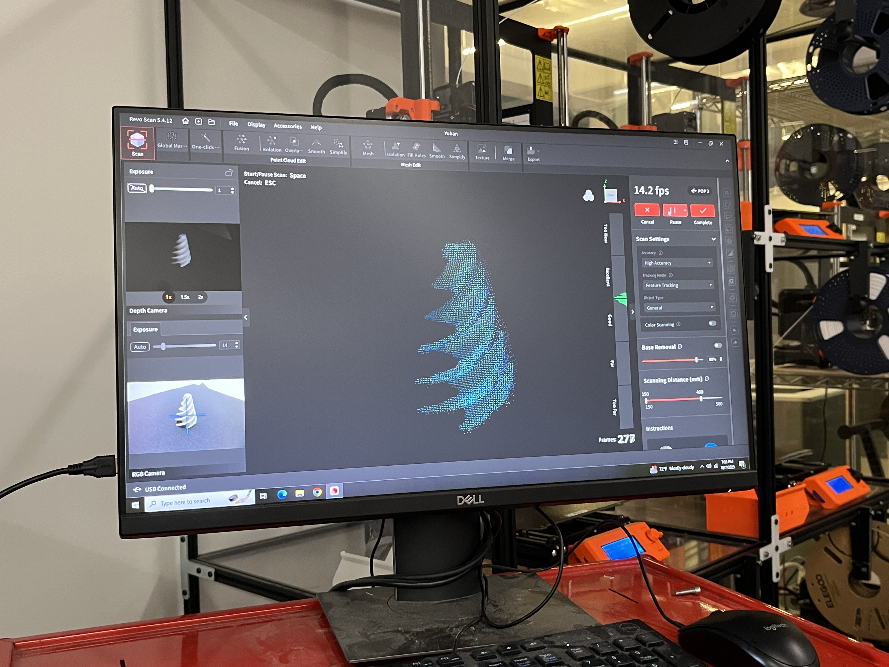

Week 5: 3D Design & Printing
Assignment: 3D Printed Fidget Cone
For this week's assignment, besides experimenting with 3D printing, I also wanted to enhance my modeling skills in Fusion 360. I followed a YouTube tutorial on how to model a fidget cone, which mainly uses circular patterns and allowed me to explore new tools like the Sweep function. Through this exercise, I became more comfortable navigating different modeling features and began to understand how geometric repetition can be used creatively in design.
Download STL fileDownload sliced gcode file


3D Printing Process
I chose to 3D print the fidget cone as a single integrated piece to ensure overall stability and structural integrity while avoiding assembly errors between separate parts. However, after printing, I found that some of the gaps were slightly fused together, which made the moving parts less flexible. I had to manually cut and loosen them afterward. This made me start to reconsider whether printing the two parts separately and assembling them later might be a better approach for achieving smoother motion and cleaner results.
Final Outcome

Assignment: 3D Scanning
For the 3D scanning part, I chose to use the LiDAR scanner available in the lab. At first, I selected a plush toy keychain as my scanning object. However, because the toy was soft and lacked a fixed form, the scanner often lost tracking or captured unwanted points when I tried to rotate or reposition it.

To improve the scanning results, I decided to switch to a more rigid object with a clearly defined shape — my 3D-printed fidget cone. However, because its surface pattern was highly repetitive, the scanner still struggled to maintain tracking when I rotated it. Through this process, I realized that soft, reflective, or repetitive objects are generally unsuitable for 3D scanning, as they make it difficult for the sensor to identify stable reference points.
